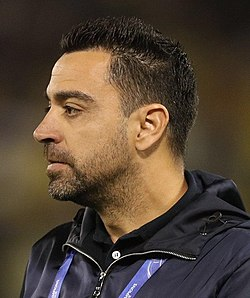

Xavi

Nombre completo
Xavi Hernández Creus
Nacimiento y Edad
25 de Enero de 1980, 43 años
Altura
1,70m
Posición
Centrocampista
Seleción Nacional
España
Trayectoria
F.C Barcelona (1998-15)
Al-Sadd S.C (2015-19)